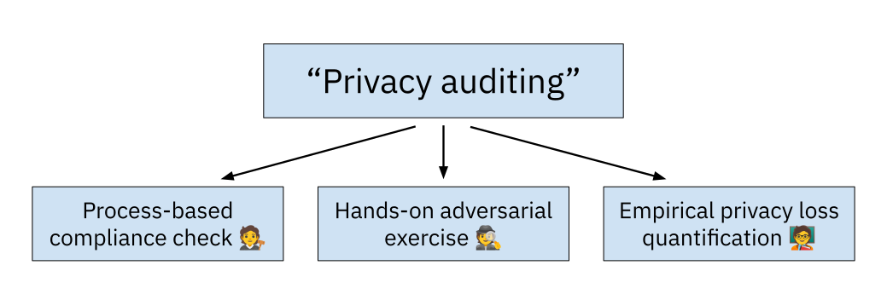

Three kinds of “privacy auditing”
When someone tells you that their current project involves privacy auditing, what do you think they're actually doing?
The answer depends on whom you ask. There are (at least!) three groups of people using this term, and they mean very different things.

Verifying compliance processes
Say you're talking to someone primarily working on compliance. For them, a "privacy audit" is likely going to be about independent checking of processes. An external person will come to an organization and ask a bunch of questions about how they're handling personal data and complying with applicable data protection regulations. Here are a few examples of such questions.
- What happens when someone requests their data be deleted?
- Do you incorporate privacy training in your employee onboarding process?
- What does your incident response process look like?
Questions generally focuses on processes. Auditors are typically getting the answers to their questions by asking the right people and looking at documentation, not by directly interacting with production systems. They must have a solid understanding of data protection law, and be good at navigating complex organizations.
The auditor will compare the answers against a list of things they should check for. They will produce a document describing all the things they checked, and the problems they identified. The organization then gets to say "an independent third-party verified that we are doing all the right things" to regulators or potential business partners. Conceptually, it is similar to a financial audit or security audits like ISO 27001 certifications.
Attacking a technical system
If you're talking to someone whose job title includes something "privacy red teaming", the answer will be different. For them, a privacy audit is going to be an adversarial assessment of a running system: a hands-on exercise whose goal is to identify potential privacy issues in a product or a piece of technical infrastructure.
It's similar to a penetration test, but the goal is different. It focuses on data from real people (not things like company secrets), and looks for issues that are typically not in scope of security red teams. Here are a few examples.
- What happens behind the scenes when a user deletes their data in a product?
- How many employees have access to user data for a given product? How many of them actually need this level of access?
- Are user sharing features sufficiently clear? Do users understand what happens when they share a piece of data with another user? How easily can they revoke this sharing, and does the revocation actually works?
- Is an anonymization method actually safe? Can attackers retrieve more data than they are supposed to by investigating an "anonymized" dataset?
This has some overlap with the previous kind of privacy audit, but it is more concerned about identifying practical risks than demonstrating compliance. It's primarily a hands-on exercise, so it's typically done by technical folks. Some tech companies an in-house privacy red team, while compliance-oriented privacy audits are more typically performed by independent third parties.
You can read more about privacy red teaming in this blog post.
Measuring the privacy loss of an algorithm
If you're talking to a researcher focusing on differential privacy, "privacy auditing" will likely mean something very different. The idea of differential privacy is to guarantee that an algorithm does not leak "too much" information about its input data. This is quantified with a parameter (denoted \(\varepsilon\)); the smaller the parameter, the better the level or protection.
The idea of privacy auditing is to take an algorithm and run experiments on it to prove that its \(\varepsilon\) is larger than a certain value. This can be useful in two contexts.
- Sometimes, privacy auditing shows that the actual \(\varepsilon\) value is larger than the theoretical one. Oops! This means that someone made a mistake in the algorithm design, or its implementation.
- Techniques from privacy auditing can also be used to design empirical privacy metrics, which attempt to evaluate the privacy properties of algorithms like synthetic data generators.
This field of research reused the "auditing" terminology, because of its conceptual similarities with real-world auditing: the idea is to double-check that something was done correctly. But the comparison stops there: there's no actual "auditor" here, unless you use this kind of technique as part of a privacy red team exercise.
I think I need a privacy audit!
Reach out! I run an independent consultancy, Hiding Nemo, which focuses on helping organizations understand and control their privacy risk. If your use case is related to my areas of expertise — privacy-enhancing technology, anonymization, re-identifiability risk evaluation — I would love to discuss how I could help. And if you're looking for a privacy expert with other areas of focus (like compliance or UX design), I would be happy to recommend someone.
Thanks to Katharine Jarmul for suggesting the topic of this blog post.